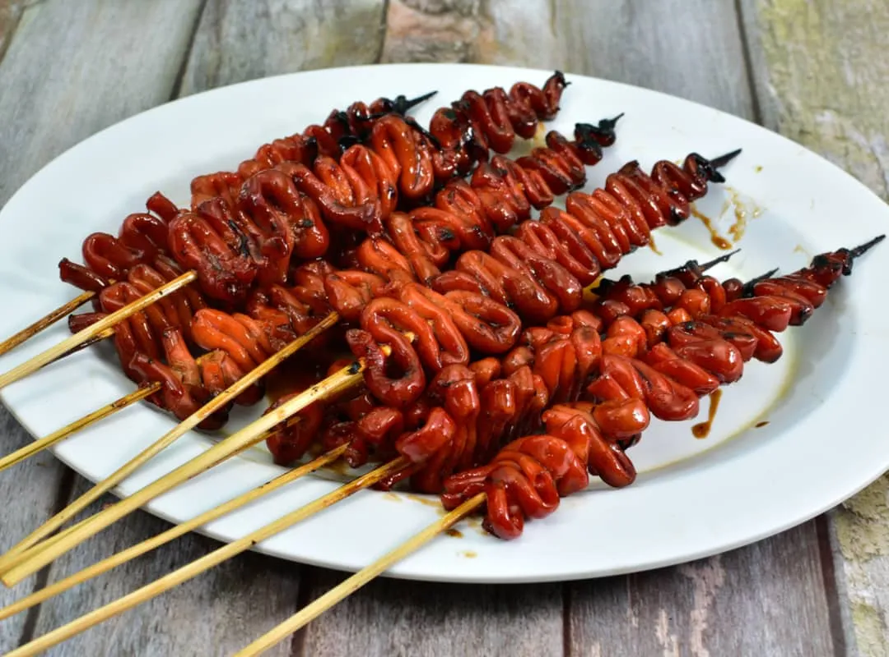

Tatak Pinoy
Isaw (Bitukang Manok)
Grilled marinated chicken intestines, a popular Filipino street barbecue.
Ingredients
- Chicken intestines
- Vinegar
- Garlic < /li>
- Pepper
- Salt
- Soy Sauce
- Oil
- Orange Food Color
Cooking Procedure
- Clean intestines well.
- Boil with vinegar and garlic.
- Add the soy sauce
- Add orange food color.
- Skewer and marinate.
- Grill until slightly charred.